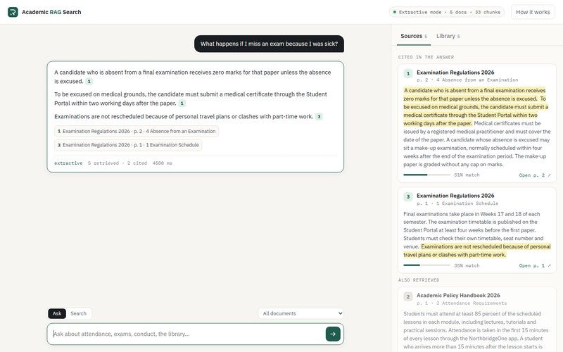
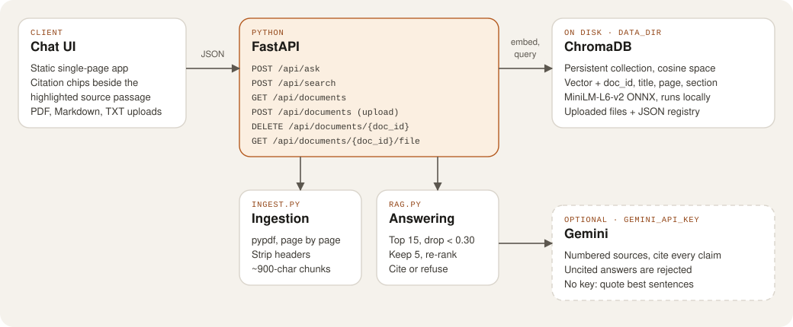

Work / Case study 04
Academic Resource RAG Search Engine
Ask a question about a policy handbook and get an answer built only from the documents, with every claim cited to the page and section it came from.
- Role
- Solo: ingestion, retrieval, API, UI and demo
- When
- Built Oct 2026
- Size
- 7 API routes, 26 pytest tests
- Hosting
- In-browser demo on GitHub Pages; full server runs locally or in Docker

The problem
School handbooks answer questions like “what happens if I miss an exam because I was sick?”, but the answer is buried in a long PDF. A general chatbot will happily answer anyway, and it can be confidently wrong. I wanted answers that come only from the documents, point to the exact page and section, and admit when the documents don’t say.
My role
A personal project, built alone: the PDF ingestion, chunking, retrieval and answering in Python, the FastAPI server, the chat interface, the tests and the in-browser demo.
Stack
- API
- Python, FastAPI
- Retrieval
- ChromaDB (persistent, cosine space) with all-MiniLM-L6-v2 embeddings run locally through ONNX
- Parsing
- pypdf, page by page
- Answers
- Gemini when a key is set, otherwise an extractive answerer that quotes sentences
- Demo
- transformers.js and pdf.js run the same pipeline in the browser
- Testing
- pytest, GitHub Actions
Architecture
Uploads go through ingestion and land in ChromaDB with their title, page and section. Questions go through retrieval and then one of two answerers.

/api/ask, /api/search, /api/documents (list, upload, delete, open the file) and /api/health. Open the diagram full size.
The hard part: answers you can check
1. Chunks that never cross a page
My first attempt split each PDF every N characters. Chunks cut sentences in half, mixed two sections together and could only be cited as “pages 2–3”. Now the ingester reads one page at a time, detects headings such as 3.1 Late Submission, and packs whole sentences into chunks of about 900 characters with about 160 characters of overlap. A chunk never spans two pages or two sections, so its citation is exact.
PDFs are also full of noise. Lines that repeat on most pages are running headers or footers, so they’re dropped before chunking:
app/ingest.py
def _running_lines(pages):
"""Lines repeated on most pages (running headers/footers) are noise."""
if len(pages) < 2:
return set()
counts = Counter(line for lines in pages for line in {l.strip() for l in lines if l.strip()})
needed = len(pages) if len(pages) < 5 else len(pages) * 0.6
return {line for line, n in counts.items() if n >= needed and not is_heading(line)}2. Saying “I don’t know”
Without a cut-off the app answered off-topic questions with whatever was least far away. Retrieval now takes the 15 nearest chunks, drops any below 0.30 cosine similarity, adds a small keyword-overlap bonus and keeps the top 5. If nothing is left, the app says the documents don’t cover it.
3. Every claim must cite a source
With a model key, Gemini gets numbered sources and must cite [n] for every claim or reply NOT_FOUND. Citations are checked against the source list, numbers that don’t exist are removed, and an answer with no valid citation is thrown away and replaced by quoted passages. If the model call fails for any reason, the app falls back to quoting instead of failing.
app/rag.py (shortened)
text = gemini_answer(question, sources)
if text.strip() == NOT_FOUND:
return Answer(question, NOT_FOUND_MESSAGE, ...)
text, used = clean_citations(text, len(sources)) # drop [n] that don't match a source
if used:
return Answer(question, text, True, "gemini", sources)
note = "The model's answer had no valid citations, so it was replaced with quoted passages."What I tested
26 pytest tests:
- Parsing: titles, pages, sections, header stripping, bullets and overlap.
- Retrieval and citations: the right page and section are cited, and extractive answers are verbatim quotes.
- Refusals: off-topic questions get “not in the documents”.
- The Gemini path with the network call mocked: valid citations, uncited answers rejected,
NOT_FOUND, and falling back when the API fails. - The full API: upload, ask, open and delete, rejected uploads and protected sample documents, plus the static demo build.
How it ships
- CI and deploy in one workflow: GitHub Actions installs the dependencies, caches the embedding model and runs pytest on every push and pull request. Only if the tests pass on
maindoes it build the demo and deploy it to GitHub Pages, so a failing test blocks the release. - Demo:
scripts/build_demo.pypre-chunks and embeds the sample documents. In the page,demo-api.jsreplaces the API with a port of the Python chunking, retrieval and extractive answering, using transformers.js for embeddings and pdf.js for uploads. - Full server: runs locally with FastAPI and ChromaDB, and the repo includes a Dockerfile for it.
What I’d do next
- Try a larger embedding model. The small one misses some synonyms: a question about “ChatGPT” doesn’t match a section about “generative AI tools”, so the app refuses rather than guessing.
- Run the Gemini mode against the sample handbooks with a real key. So far that path is covered by tests with the network call mocked.
- Add OCR for scanned PDFs, which have no text layer today.